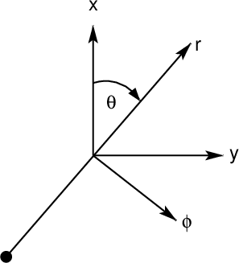
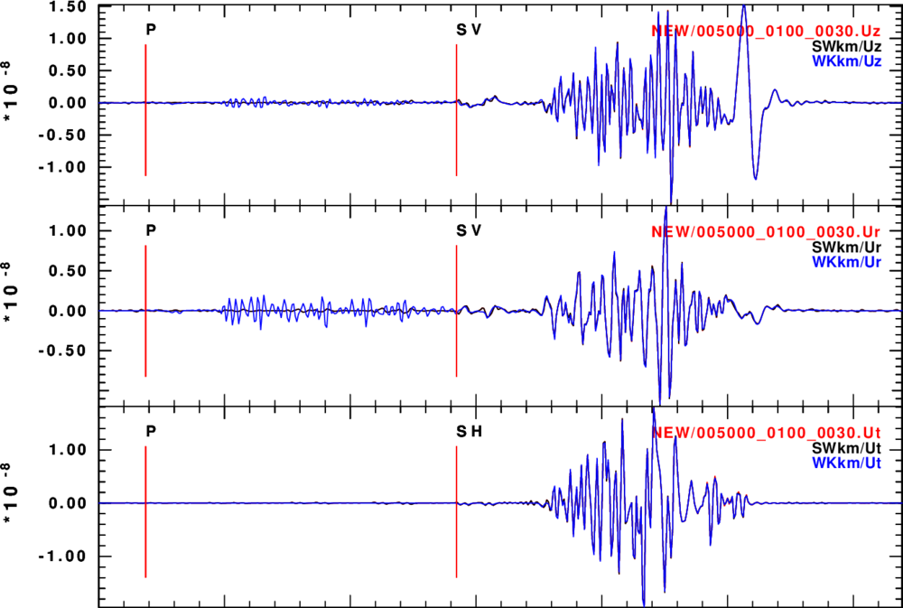
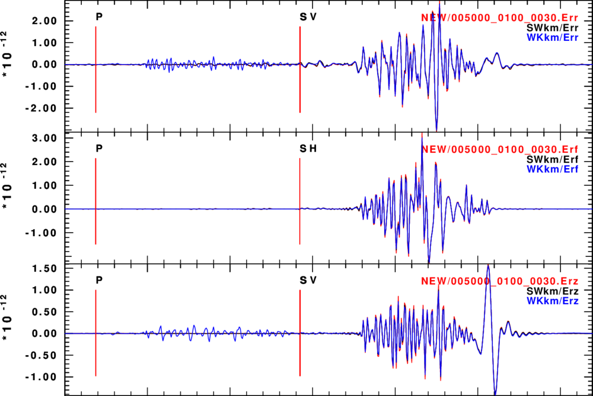
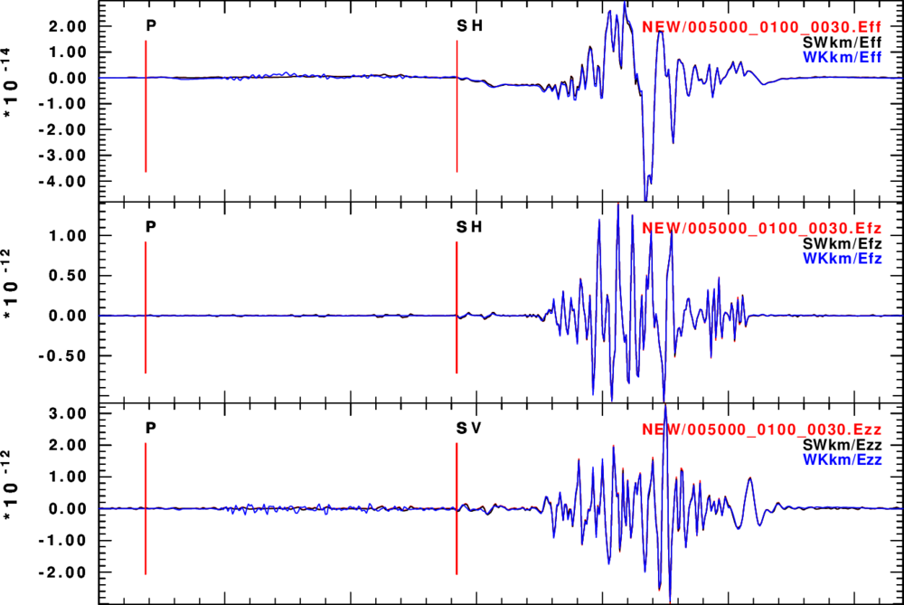
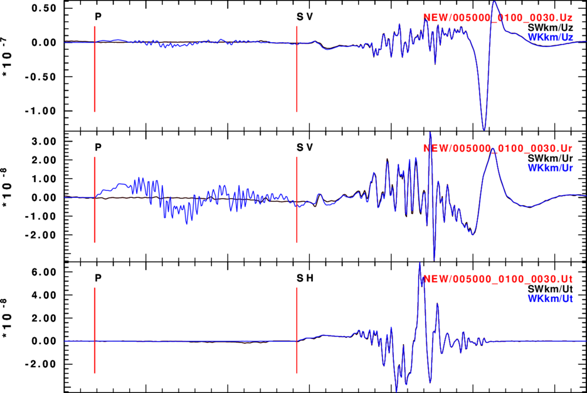
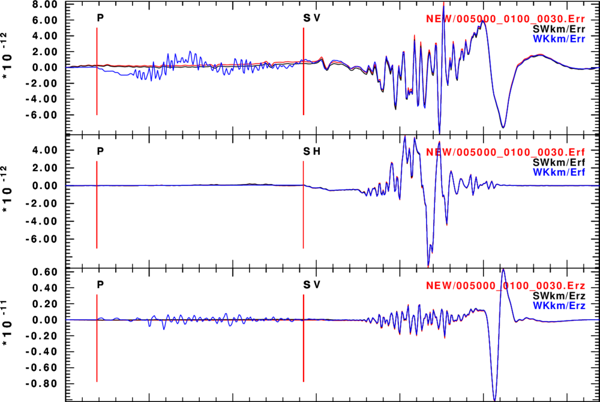
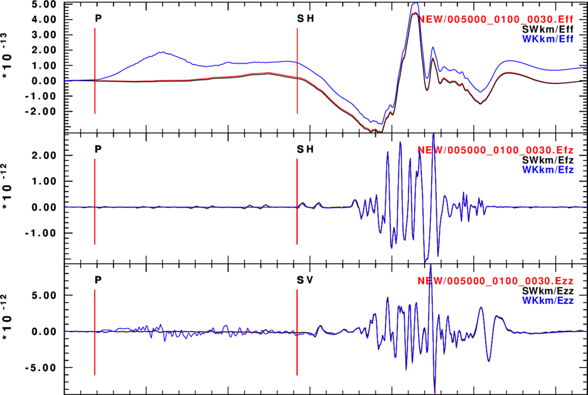

This is an update version of a tutorial on the use of new codes
for computing stress, strain and rotation in 1-D layered media.
The earlier version used surface-wave modal superposition to
make these synthetics. This document now includes wavenumber
integration to make complete synthetics. The original codes have
been polished and renamed. This tutorial discusses the
following codes:
The new source code and validation codes are given in t.tgz. To unpack this use the command
gunzip -c t.tgz | tar xf -
which will create the following directory and subdirectories:
CPSstrain ├── LAYERF.IMG ├── LAYERhpulse96strainF ├── LAYERhpulse96strainS ├── LAYERhspec │ ├── WK00 │ ├── WKR+ │ ├── WKR- │ ├── WKZ+ │ └── WKZ- ├── LAYERhspecF │ ├── WK00 │ ├── WKR+ │ ├── WKR- │ ├── WKZ+ │ └── WKZ- ├── LAYERhspecS │ ├── Orig │ ├── WK00 │ ├── WKR+ │ ├── WKR- │ ├── WKZ+ │ └── WKZ- ├── LAYERS.IMG ├── LAYERspulse96 │ ├── SW00 │ ├── SWR+ │ ├── SWR- │ ├── SWZ+ │ └── SWZ- ├── LAYERspulse96F │ ├── SW00 │ ├── SWR+ │ ├── SWR- │ ├── SWZ+ │ └── SWZ- ├── LAYERspulse96S │ ├── Orig │ ├── SW00 │ ├── SWR+ │ ├── SWR- │ ├── SWZ+ │ └── SWZ- ├── LAYERspulse96strainF ├── LAYERspulse96strainS ├── src ├── TEST.SW │ ├── DIR.I.A │ ├── DIR.I.D │ └── DIR.I.V ├── TEST.WK │ ├── DIR.I.A │ ├── DIR.I.D │ └── DIR.I.V ├── WHOLEhpulse96strain ├── WHOLEhspec │ ├── Orig │ ├── WK00 │ ├── WKR+ │ ├── WKR- │ ├── WKZ+ │ └── WKZ- ├── WHOLEhwhole │ ├── Orig │ ├── WK00 │ ├── WKR+ │ ├── WKR- │ ├── WKZ+ │ └── WKZ- └── WHOLE.IMG
The theory describing the creation of Green's functions using modal superposition and an extension to compute stress and strain is given in strain.pdf.
The program spulse96strain can output the three component ground motions, the cylindrical strains and stresses. srotate96 implements the rotation discussed at the end of strain.pdf to rotate the cylindrical strains and stresses to a local Cartesian system show in the next figure.
|  |
Here the x- and y-axes might represent the orientations of a strain sensor and the r- direction the direction of the propagating wave.
The syntax for the command is very simple:
az is the angle θ in degrees shown in the figure. The Example
Usage: srotate96 -AZ az [-U|-STRESS|-STRAIN] -FILE prototype
-AZ az (required) angle between r- and x-axes
-FILE prototype (required) identifier for filename
for the example below this could be ../NEW/005000_0100_0010
-U Rotate the Ur Ut Uz from [sh]pulse96strain to Ux Uy Uz
if they exist, e.g., ../NEW/005000_0100_0010.Ur etc
to create 005000_0100_0010_Ux etc in the current directory
-STRAIN Rotate the Err Erf .. Ezz from [sh]pulse96strain to Exx Eyy ..
if they exist, e.g., ../NEW/005000_0100_0010.Err etc
to create 005000_0100_0010_Exx etc in the current directory
-STRESS Rotate the Srr Srf .. Szz from [sh]pulse96strain to Sxx Syy ..
if they exist, e.g., ../NEW/005000_0100_0010.Srr etc
to create 005000_0100_0010_Sxx etc in the current directory
-ROTATE Rotate the Wrf Wrz Wfz from [sh]pulse96strain to Wxy Wxz Wyz
if they exist, e.g., ../NEW/005000_0100_0010.Wrf etc
to create 005000_0100_0010_Wxy etc in the current directory
-h (default false) online help
Assume that the command spulse96strain created the files
05000_0100_0010.Eff 005000_0100_0010.Ezz 005000_0100_0010.Srz 005000_0100_0010.Efz 005000_0100_0010.Sff 005000_0100_0010.Szz 005000_0100_0010.Erf 005000_0100_0010.Sfz 005000_0100_0010.Ur 005000_0100_0010.Err 005000_0100_0010.Srf 005000_0100_0010.Ut 005000_0100_0010.Erz 005000_0100_0010.Srr 005000_0100_0010.Uzin the directory ../NEW
Then
srotate96 -AZ 0.0 -STRESS -FILE ../NEW/005000_0100_0030creates the following files in the current directory:
005000_0100_0030_Exx 005000_0100_0030_Eyz 005000_0100_0030_Sxz 005000_0100_0030_Ux 005000_0100_0030_Exy 005000_0100_0030_Ezz 005000_0100_0030_Syy 005000_0100_0030_Uy 005000_0100_0030_Exz 005000_0100_0030_Sxx 005000_0100_0030_Syz 005000_0100_0030_Uz 005000_0100_0030_Eyy 005000_0100_0030_Sxy 005000_0100_0030_SzzNote that the prevent confusion the original file extension followed the . while the rotated components use the _ as a separator.
This program was built upon two programs in the Computer Programs in Seismology package: spulse96 and f96tosac. Thus it maintains the functionality of the combined use of those two programs. In addition strains and stresses can be computed.
As with spulse96 the surface wave eigenfunctions must be computed using the sprep96, sdisp96, sregn96, slegn96 sequence. The command is given by the following
quake: ~ rbh$ spulse96strain -hThis is an extensive on-line help, however the example provided in the validation code shows how easy it is to run.
USAGE:
spulse96strain -d Distance_File [ -t -o -p -i ] [-a alpha]
-l L [ -D|-V |A] [-F rfile ] [ -m mult] [-STEP|-IMP]
[-STRESS -STRAIN -ROTATE -GRN] [-FUND] [-HIGH] [-Z]
[-LAT] [-2] [ -M mode ] [-LOCK] -FMT ifmt
[-M0 moment ] [-MW mw] [-STK stk -DIP dip -RAKE rake]
[-FX fx -FY fy -FZ fz]
[-XX Mxx ... -ZZ Mzz] [-?] [-h]
TIME FUNCTION SPECIFICATION
-t Triangular pulse of base 2 L dt
-p Parabolic Pulse of base 4 L dt
-p -l 1 recommended
-l L (default 1 )duration control parameter
-o Ohnaka pulse with parameter alpha
-i Dirac Delta function
-a alpha Shape parameter for Ohnaka pulse
-F rfile User supplied pulse
-m mult Multiplier (default 1.0)
-STEP (default)
-IMP
By default the source time function is
steplike. -IMP forces impulse like. -D -IMP is Green s function
OUTPUT FILE NAME
The format for the name of the binary output attempts to
give information on epicentral distance (km),
source depth (km), and receiver depth(km). The options are
-FMT 1 DDDDDd_HHHh_ZZZz.cmp
e.g. 005001_1234_0045.Uz
-FMT 2 DDDDDddd_HHHhhh_ZZZzzz.cmp
e.g. 00500123_123456_004578.Erf
-FMT 3 DDDDDdHHHh.grn(default)
e.g. 0050010041.ZVF
-FMT 4 DDDDdHHHh.grn
e.g. 050010045.Srz
-FMT 5 DDDdddHhhh.grn
e.g. 5001234578.Err
where D is for epicentral distance, H source depth, and
Z receiver depth. The lower case indicates the digits
to the right of the decimal place. The examples above
are for an epicentral distance is 500.123 km, source
depth 123.456 km and receiver depth 4.578 km.
OUTPUT TIMESERIES FOR SOURCE as Ur, Ut, Uz components with strain, stress optional
-D Output is ground displacement (m)
-V Output is ground velocity (default) (m/s)
-A Output is ground acceleration (m/s^2)
-STRESS (default .false. ) output stress for mechanism
units are Pa, with suffix Srr, Srf, Srz, Stt, Sfz, Szz
-STRAIN (default .false. ) output strain for mechanism
with suffix, Err, Erf, Erz, Eff, Efz, Ezz
-ROTATE (default .false. ) output rotation for mechanism
with suffix, Wfz, Wrz, Wrf
-GRN (default false) Output Green;s functions
spulse96strain -STEP -V -p -l 1 -GRN -FMT 4 is same as
spulse96 -V -p -l 1 | f96tosac -G . For KM,KM/S,GM/CM^3
model, output will be CM/S for moment of 1.0e+20 dyne-cm
of force of 1.0e+15 dyne
-TEST1 (default .false.) output CPS Green functions ,e.g.,
ZDS RDS ... RHF THF for use with moment tensor codes
and gsac MT command. This is equivalent to
spulse96 -V -p -l 1 | f96tosac -G if -FMT 4 is used
with strainspulse96
COMPUTATIONS
-d Distance_File {required} Distance control file
This contains one of more lines with following entries
DIST(km) DT(sec) NPTS T0(sec) VRED(km/s)
first time point is T0 + DIST/VRED
VRED=0 means do not use reduced travel time, e.g.
500.0 0.25 512 -23.33 6.0
500.0 0.25 512 60 0.0
both have first sample at travel time of 60s
-LAT (default false) Laterally varying eigenfunctions
-2 (default false) Use double length internally
-M nmode (default all) mode to compute [0=fund,1=1st]
-Z (default false) zero phase triangular/parabolic pulse
-FUND (default all) fundamental modes only
-HIGH (default all) all higher modes only
-LOCK (default false) locked mode used
SOURCE MECHANISM SPECIFICATION
-DIP dip dip of fault plane
-STK Strike strike of fault plane
-RAKE Rake slip angle on fault plane
-M0 Moment (def=1.0) Seismic moment in units of dyne-cm
-MW mw Moment Magnitude
moment (dyne-cm) from log10 Mom = 16.10 + 1.5 Mw
For strike,dip,rake source mw or Moment must be specified
-EX Explosion
-AZ Az Source to Station Azimuth
-BAZ Baz Station to Source azimuth
-fx FX -fy Fy -fZ fz Point force amplitudes (N,E,down) in dynes
-XX Mxx -YY Myy -ZZ Mzz Moment tensor elements in units of
-XY Mxy -XZ Mxz -YZ Myz dyne-cm
The moment tensor coordinates are typically X = north Y = east and Z = down
If by accident more than one source specification is used,
the hierarchy is Mij > Strike,dip,rake > Explosion > Force
--------------------------------------------------------------
NOTE: The output units are related tot he model specification.
To have the desired units the model must be in KM, KM/S and GM/CM^3
--------------------------------------------------------------
-? Write this help message
-h Write this help message
$ hspec96strain -hThe command line options for hpulse96strain are similar to those of spulse96strain:
USAGE: hspec96 [-H] [-A arg] [-K] [-N][-SU] [-SD] [-SPUP] [-SSUP] [-SPDN] [-SSDN] [-RU] [-RD] [-RPUP] [-RSUP] [-RPDN] [-RSDN] [-?] [-h]
-H (default false) Use Hankel function not Bessel
-A arg (default arg=3.0) value of kr where Hn(kr) replaces
Jn(kr) in integration - only used when -H is used
-K (default Futterman) use Kjartansson Causal Q
-N (default causal) use non-causal Q
The following govern wavefield at source. The default is the entire wavefield
-SU (default whole wavefield) Compute only upgoing wavefield from the source
-SD (default whole wavefield) Compute only downgoing wavefield from the source
-SPUP Include upward P at source
-SSUP Include upward S at source
-SPDN Include downward P at source
-SSDN Include downward S at source
The following govern wavefield at receiver. The default is the entire wavefield
-RD Only downgoing waves at receiver
-RU Only upgoing waves at receiver
-RPUP Include upward P at receiver
-RSUP Include upward S at receiver
-RPDN Include downward P at receiver
-RSDN Include downward S at receiver
-? Display this usage message
-h Display this usage message
USAGE:
hpulse96strain -d Distance_File [ -t -o -p -i ] [-a alpha]
-l L [ -D|-V |A] [-F rfile ] [ -m mult] [-STEP|-IMP]
[-STRESS -STRAIN -ROTATE -GRN] [-FUND] [-HIGH] [-Z]
[-LAT] [-2] [ -M mode ] [-LOCK] -FMT ifmt
[-M0 moment ] [-MW mw] [-STK stk -DIP dip -RAKE rake]
[-FX fx -FY fy -FZ fz]
[-XX Mxx ... -ZZ Mzz] [-?] [-h]
TIME FUNCTION SPECIFICATION
-t Triangular pulse of base 2 L dt
-p Parabolic Pulse of base 4 L dt
-p -l 1 recommended
-l L (default 1 )duration control parameter
-o Ohnaka pulse with parameter alpha
-i Dirac Delta function
-a alpha Shape parameter for Ohnaka pulse
-F rfile User supplied pulse
-m mult Multiplier (default 1.0)
-STEP (default)
-IMP
By default the source time function is
steplike. -IMP forces impulse like. -D -IMP is Green s function
OUTPUT FILE NAME
The format for the name of the binary output attempts to
give information on epicentral distance (km),
source depth (km), and receiver depth(km). The options are
-FMT 1 DDDDDd_HHHh_ZZZz.cmp
e.g. 005001_1234_0045.Uz
-FMT 2 DDDDDddd_HHHhhh_ZZZzzz.cmp
e.g. 00500123_123456_004578.Erf
-FMT 3 DDDDDdHHHh.grn(default)
e.g. 0050010041.ZVF
-FMT 4 DDDDdHHHh.grn
e.g. 050010045.Srz
-FMT 5 DDDdddHhhh.grn
e.g. 5001234578.Err
where D is for epicentral distance, H source depth, and
Z receiver depth. The lower case indicates the digits
to the right of the decimal place. The examples above
are for an epicentral distance is 500.123 km, source
depth 123.456 km and receiver depth 4.578 km.
OUTPUT TIMESERIES FOR SOURCE as Ur, Ut, Uz components with strain, stress optional
-D Output is ground displacement (m)
-V Output is ground velocity (default) (m/s)
-A Output is ground acceleration (m/s^2)
-STRESS (default .false. ) output stress for mechanism
units are Pa, with suffix Srr, Srf, Srz, Stt, Sfz, Szz
-STRAIN (default .false. ) output strain for mechanism
with suffix, Err, Erf, Erz, Eff, Efz, Ezz
-ROTATE (default .false. ) output rotation for mechanism
with suffix, Wfz, Wrz, Wrf
-GRN (default false) Output Green;s functions
hpulse96strain -STEP -V -p -l 1 -GRN -FMT 4 is same as
hpulse96 -V -p -l 1 | f96tosac -G . For KM,KM/S,GM/CM^3
model, output will be CM/S for moment of 1.0e+20 dyne-cm
of force of 1.0e+15 dyne
-TEST1 (default .false.) output CPS Green functions ,e.g.,
ZDS RDS ... RHF THF for use with moment tensor codes
and gsac MT command. This is equivalent to
spulse96 -V -p -l 1 | f96tosac -G if -FMT 4 is used
with strainspulse96
COMPUTATIONS
-Z (default false) zero phase
SOURCE MECHANISM SPECIFICATION
-DIP dip dip of fault plane
-STK Strike strike of fault plane
-RAKE Rake slip angle on fault plane
-M0 Moment (def=1.0) Seismic moment in units of dyne-cm
-MW mw Moment Magnitude
moment (dyne-cm) from log10 Mom = 16.10 + 1.5 Mw
For strike,dip,rake source mw or Moment must be specified
-EX Explosion
-AZ Az Source to Station Azimuth
-BAZ Baz Station to Source azimuth
-fx FX -fy Fy -fZ fz Point force amplitudes (N,E,down) in dynes
-XX Mxx -YY Myy -ZZ Mzz Moment tensor elements in units of
-XY Mxy -XZ Mxz -YZ Myz dyne-cm
The moment tensor coordinates are typically X = north Y = east and Z = down
If by accident more than one source specification is used,
the hierarchy is Mij > Strike,dip,rake > Explosion > Force
--------------------------------------------------------------
NOTE: The output units are related tot he model specification.
To have the desired units the model must be in KM, KM/S and GM/CM^3
--------------------------------------------------------------
-? Write this help message
-h Write this help message
The validation code is contained in teststrain.tgz.
This uses the codes distributed in Computer Programs in
Seismology. However to make the PNG graphics used here the
ImageMagick convert program is used. ImageMagick is
available for macOS and LINUX. To unpack and run the tests,
gunzip -c teststrain.tgz | tar xf - cd CPSstrain (cd SWkm; (cd SW00;DOITSW) (cd SWZ+;DOITSW) (cd SWZ-;DOITSW) (cd SWR+;DOITSW) (cd SWR-;DOITSW) ) (cd WKkm; (cd WK00;DOITWK) (cd WKZ+;DOITWK) (cd WKZ-;DOITWK) (cd WKR+;DOITWK) (cd WKR-;DOITWK) ) DOSTRAINCMP
Using spulse96 and f96tosac, it creates surface wave modal superposition Green's functions in the SWkm directory for epicentral distances of 499.5 (sub-directory SWR-), 500.0 (sub-directory SW00) an 500.5 (sub-directory SWR+) km and receiver depths of 1.0 km (SW00), 0.5 km (SWZ-) and 1.5 km (SWZ+).
Similar computations are done using wavenumber integration in the directory WKkm and subdirectories WK00, WKZ-, WKZ+, WKR- and WKR+. These are complete solutions which include P waves and near-field terms. The purpose is to compare the surface-wave synthetics to the complete solution.
The final script DOSTRAINCMP runs DOITSW in the NEW directory. After defining the model and generating the eigenfunctions and dispersion, the following command is run:
spulse96strain -V -p -l 1 -d dfile -MW 2.6 -STK 0 -DIP 45 -RAKE 90 -AZ 22.5 -STRESS -STRAIN -FMT 1The following files in Sac format are created:
005000_0100_0010.Eff 005000_0100_0010.Ezz 005000_0100_0010.Srz 005000_0100_0010.Efz 005000_0100_0010.Sff 005000_0100_0010.Szz 005000_0100_0010.Erf 005000_0100_0010.Sfz 005000_0100_0010.Ur 005000_0100_0010.Err 005000_0100_0010.Srf 005000_0100_0010.Ut 005000_0100_0010.Erz 005000_0100_0010.Srr 005000_0100_0010.Uz
The DOSTRAINCMP, then runs the scripts DOSTRAINF in the SWkm and WKkm directories. Those scripts create synthetics for a given mechanism, moment and azimuth, and then numerically differentiates these to give the strains. The values used for the dR, dZ and dAz are appropriate for the sampling interval and source pulse duration used. The next figures compare the three estimates of ground velocity and strain.
|
 |
|
 |
|
 |
|
|
In this case the response to a point force fx=Fy=fz=1.0e+15 dyne
is computed. The validation code is contained in teststrain.tgz. To unpack and run the
tests,
gunzip -c teststrain.tgz | tar xf - cd CPSstrain (cd SWkm; (cd SW00;DOITSW) (cd SWZ+;DOITSW) (cd SWZ-;DOITSW) (cd SWR+;DOITSW) (cd SWR-;DOITSW) ) (cd WKkm; (cd WK00;DOITWK) (cd WKZ+;DOITWK) (cd WKZ-;DOITWK) (cd WKR+;DOITWK) (cd WKR-;DOITWK) ) [note the above steps were executed in the previous example] DOSTRAINCMPF
The final script DOSTRAINCMPF runs DOITSWF in the NEW directory. After defining the model and generating the eigenfunctions and dispersion, the following command is run:
spulse96strain-V -p -l 1 -d dfile -fx ${F1} -fy ${F2} -fz ${F3} -STRESS -STRAIN -AZ ${AZ} -FMT 1
As above the following files in Sac format are created:
005000_0100_0010.Eff 005000_0100_0010.Ezz 005000_0100_0010.Srz 005000_0100_0010.Efz 005000_0100_0010.Sff 005000_0100_0010.Szz 005000_0100_0010.Erf 005000_0100_0010.Sfz 005000_0100_0010.Ur 005000_0100_0010.Err 005000_0100_0010.Srf 005000_0100_0010.Ut 005000_0100_0010.Erz 005000_0100_0010.Srr 005000_0100_0010.Uz
The DOSTRAINCMPF, then runs the scripts DOSTRAINF in the SWkm and WKkm directories. Those scripts create synthetics for a given mechanism, moment and azimuth, and then numerically differentiates these to give the strains. The values used for the dR, dZ and dAz are appropriate for the sampling interval and source pulse duration used. The next figures compare the three estimates of ground velocity and strain.
|
 |
|
 |
|
 |
|
|
This comparison is fairly good, except for the wavenumber integration estimate of the Eff = Eφφ component. The dominant contribution to this the ur. Perhaps the near-field terms ignored int he modal superposition is important in this case.
Synthetic seismogram code runs on the basis of numerical values given for the model. The code has no sense of physical units. These strain codes are tailored to the use of KM, KM/S and GM/CM3 for depth, velocity and density. The epicentral distances, and source/receiver depths are also assumed to be KM. Internally the code corrects everything to MKS units, e.g., M, KG/M3, S units so that the strain and stress are correctly computed. On output the units are
Uz, Ur, Ut -D flag displacement in meters
-V flag velocity in meters/s
-A flag acceleration in meters/s/s
Err ... Ezz -STRAIN dimensionless (meter/meter)
Srr ... Szz -STRESS stress in Pa
After some further testing, spulse96strain and srotate96 will be part of the Computer Programs in Seismology distribution. To make this tool available, you will need to download spulse96strain.f, srotate96.c, makeadd.txt and makeadd1.txt and makeall.txt, and perform the following steps:
cd PROGRAMS.330/VOLIII/src
[copy the strainspulse96.f to this directory]
[carefully edit the Makefile to change the lines
sacsubf.o:
cp ../../SUBS/sacsubf.f .
$(FCMP) -c sacsubf.f
all: sprep96 sdisp96 \
sdpsrf96 sdpegn96 sdpder96 \
slegn96 sregn96 \
slat2d96 \
spulse96 \
scomb96 \
sdpdsp96 \
sdprad96 \
sdpspc96 \
srfgrd96 \
tprep96 tdisp96 tregn96 tlegn96 tdpsrf96 tdpegn96 tdpder96 tpulse96 tcomb96 \
clean
to
sacsubf.o:
cp ../../SUBS/sacsubf.f .
$(FCMP) -c sacsubf.f
sacsubc.c:
cp ${CPS}/SUBS/sacsubc.c .
sacsubc.h:
cp ${CPS}/SUBS/sacsubc.h .
all: sprep96 sdisp96 \
sdpsrf96 sdpegn96 sdpder96 \
slegn96 sregn96 \
slat2d96 \
spulse96 \
scomb96 \
sdpdsp96 \
sdprad96 \
sdpspc96 \
srfgrd96 \
tprep96 tdisp96 tregn96 tlegn96 tdpsrf96 tdpegn96 tdpder96 tpulse96 tcomb96 \
spulse96strain srotate96\
clean
Finally change the section
spulse96: spulse96.o $(SSUBS) f96subf.o lgstr.o $(GETMOD) $(MCHDEP) $(MCHCMD)
$(FCMP) spulse96.o $(SSUBS) f96subf.o lgstr.o $(GETMOD) $(MCHDEP) $(MCHCMD) -o spulse96
mv spulse96 $(DEST)
scomb96: scomb96.o $(SSUBS) $(MCHDEP) $(MCHCMD)
$(FCMP) scomb96.o $(SSUBS) $(MCHDEP) $(MCHCMD) -o scomb96
mv scomb96 $(DEST)
to
spulse96: spulse96.o $(SSUBS) f96subf.o lgstr.o $(GETMOD) $(MCHDEP) $(MCHCMD)
$(FCMP) spulse96.o $(SSUBS) f96subf.o lgstr.o $(GETMOD) $(MCHDEP) $(MCHCMD) -o spulse96
mv spulse96 $(DEST)
spulse96strain: spulse96strain.o sacsubf.o $(SSUBS) f96subf.o lgstr.o $(GETMOD) $(MCHDEP) $(MCHCMD)
$(FCMP) spulse96strain.o sacsubf.o $(SSUBS) f96subf.o lgstr.o $(GETMOD) $(MCHDEP) $(MCHCMD) -o spulse96strain
mv spulse96strain $(DEST)
scomb96: scomb96.o $(SSUBS) $(MCHDEP) $(MCHCMD)
$(FCMP) scomb96.o $(SSUBS) $(MCHDEP) $(MCHCMD) -o scomb96
mv scomb96 $(DEST)
srotate96: srotate96.o sacsubc.o
${CCMP} -o srotate96 srotate96.o sacsubc.o -lm
mv srotate96 $(DEST)
Note that in the Makefile there are no leading spaces. The offset
are due to a TAB.
Now
make all or make spulse96strain srotate96 clean